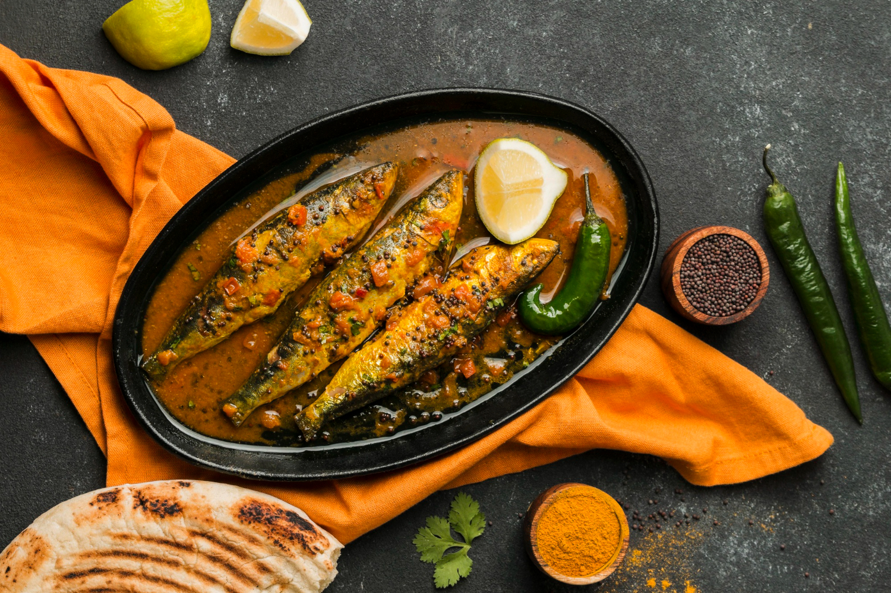

Fish curry

Recipe:
Ingredients:
- 500g fish fillets
- 1 onion, finely chopped
- 2 tomatoes, chopped
- 1/2 cup coconut milk
- 2 tablespoons curry powder
- 1 tablespoon ginger-garlic paste
- 1 teaspoon turmeric powde
- 1 teaspoon chili powder
- 1 teaspoon cumin seeds
- 2 tablespoons vegetable oil
- Salt to taste
- Fresh coriander for garnish
Step 1:
Marinate the Fish Take 500g of fish fillets and marinate them with 1 teaspoon of turmeric powder, 1 teaspoon of chili powder, and salt to taste. Allow it to sit for about 15 minutes.
Step 2:
Prepare Ingredients Finely chop 1 onion and 2 tomatoes. Heat 2 tablespoons of vegetable oil in a pan.
Step 3:
Sauté Onions Add 1 teaspoon of cumin seeds to the hot oil. Sauté the chopped onions in the oil until they turn golden brown.
Step 4:
Add Ginger-Garlic Paste Add 1 tablespoon of ginger-garlic paste to the onions. Cook until the raw smell of the paste disappears.
Step 5:
Introduce Curry Powder Stir in 2 tablespoons of curry powder. Cook for about 2 minutes to allow the flavors to meld.
Step 6:
Add Tomatoes Incorporate the chopped tomatoes into the mixture. Cook until the tomatoes become mushy and blend into the mixture.
Step 7:
Pour Coconut Milk Pour in 1/2 cup of coconut milk into the pan. Bring the mixture to a simmer.
Step 8:
Cook the Fish Add the marinated fish fillets to the simmering curry. Cook until the fish is done, and the curry reaches your desired thickness.
Step 9:
Garnish and Serve Garnish the fish curry with fresh coriander.
Your delicious fish curry is now ready to be served! Enjoy your homemade fish curry!
Marinate the Fish Take 500g of fish fillets and marinate them with 1 teaspoon of turmeric powder, 1 teaspoon of chili powder, and salt to taste. Allow it to sit for about 15 minutes.
Step 2:
Prepare Ingredients Finely chop 1 onion and 2 tomatoes. Heat 2 tablespoons of vegetable oil in a pan.
Step 3:
Sauté Onions Add 1 teaspoon of cumin seeds to the hot oil. Sauté the chopped onions in the oil until they turn golden brown.
Step 4:
Add Ginger-Garlic Paste Add 1 tablespoon of ginger-garlic paste to the onions. Cook until the raw smell of the paste disappears.
Step 5:
Introduce Curry Powder Stir in 2 tablespoons of curry powder. Cook for about 2 minutes to allow the flavors to meld.
Step 6:
Add Tomatoes Incorporate the chopped tomatoes into the mixture. Cook until the tomatoes become mushy and blend into the mixture.
Step 7:
Pour Coconut Milk Pour in 1/2 cup of coconut milk into the pan. Bring the mixture to a simmer.
Step 8:
Cook the Fish Add the marinated fish fillets to the simmering curry. Cook until the fish is done, and the curry reaches your desired thickness.
Step 9:
Garnish and Serve Garnish the fish curry with fresh coriander.
Your delicious fish curry is now ready to be served! Enjoy your homemade fish curry!